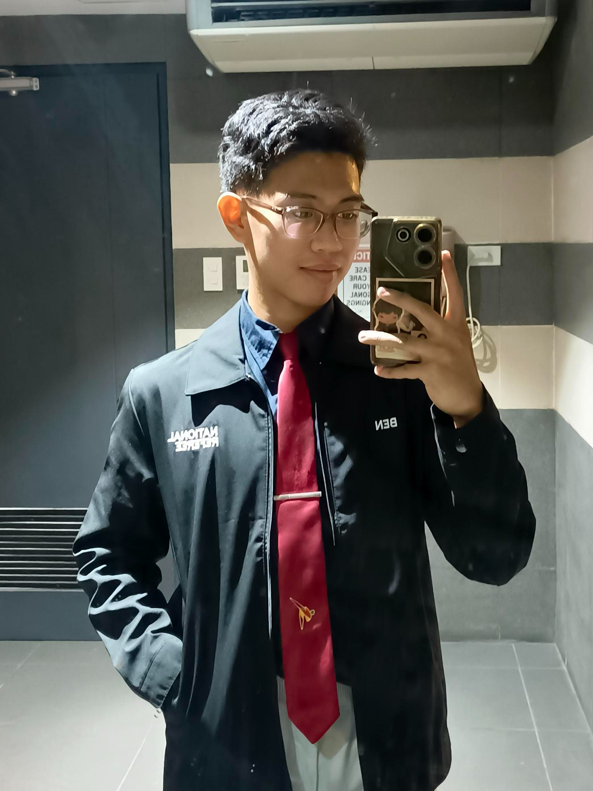

About Me

BSIT-MWA | 2nd Year
I am a student at National University—Manila studying Bachelor of Science in Information Technology, specializing in Mobile and Web Applications.
I have been in the IT field since Senior High School and have been learning to program and develop since then. I seek opportunities to further expand my knowledge about programming and desire to be a part of the world's technological advancement.
I want to pursue IT because I am passionate about how technology works and to contribute to its ongoing development.
My Hobbies
- Practice Software Development
- Sports
- Gaming
- Learning new technologies
Favorite Websites
Contact
Email: benedictpascua05@gmail.com
Phone: +63 966 9580 234
Location: Manila, Philippines
Github: My Github Profile